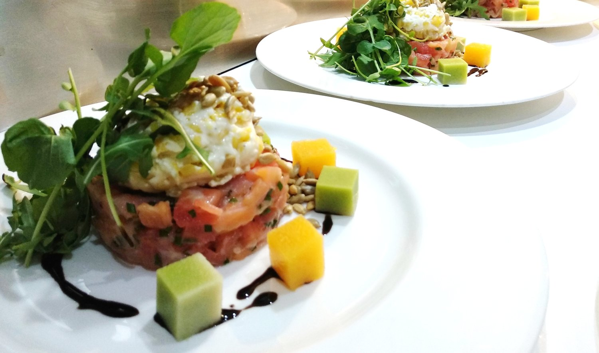
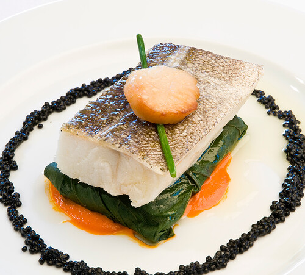
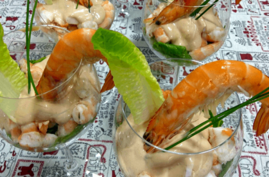
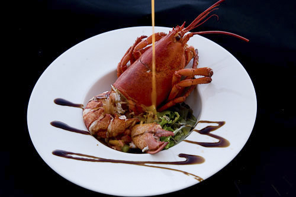
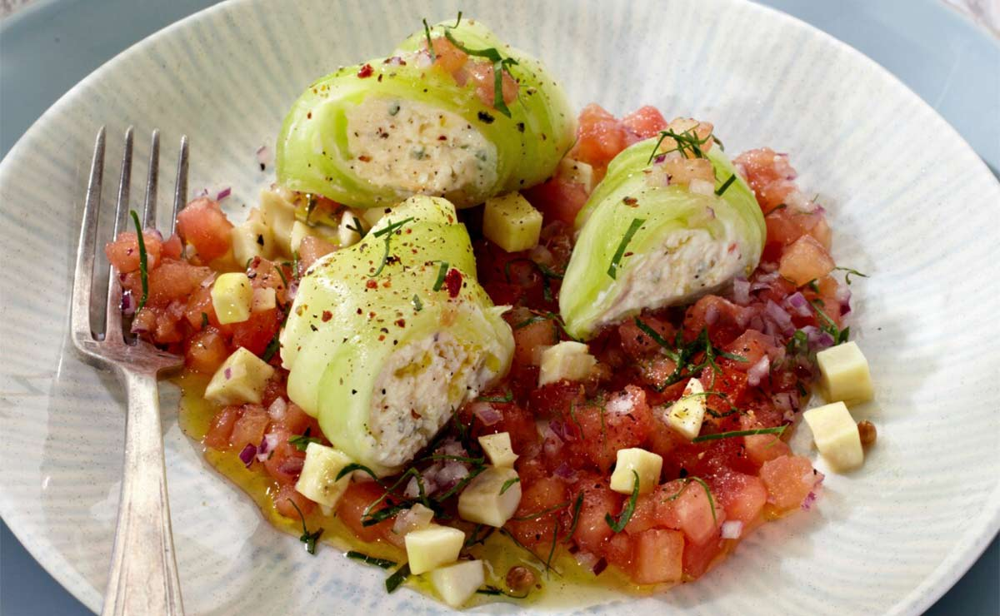
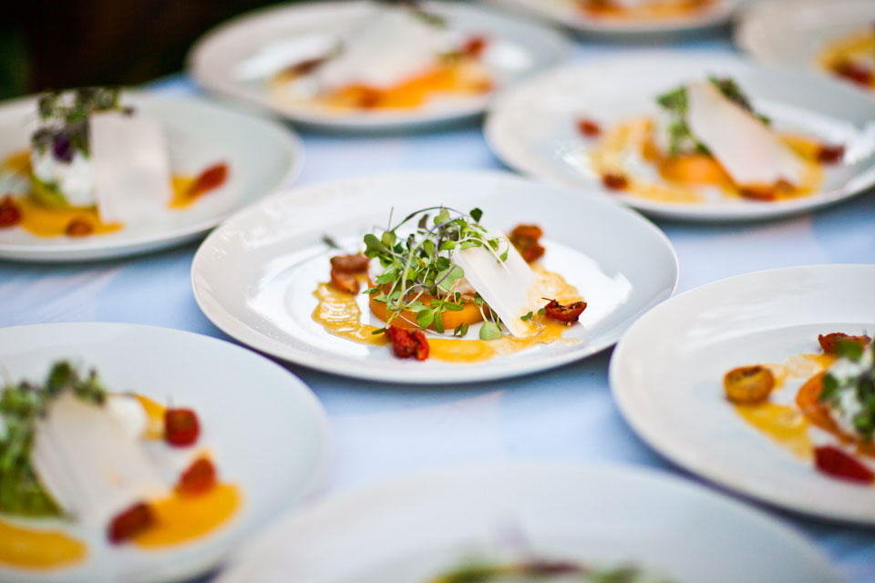
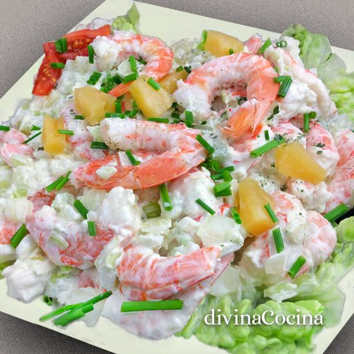
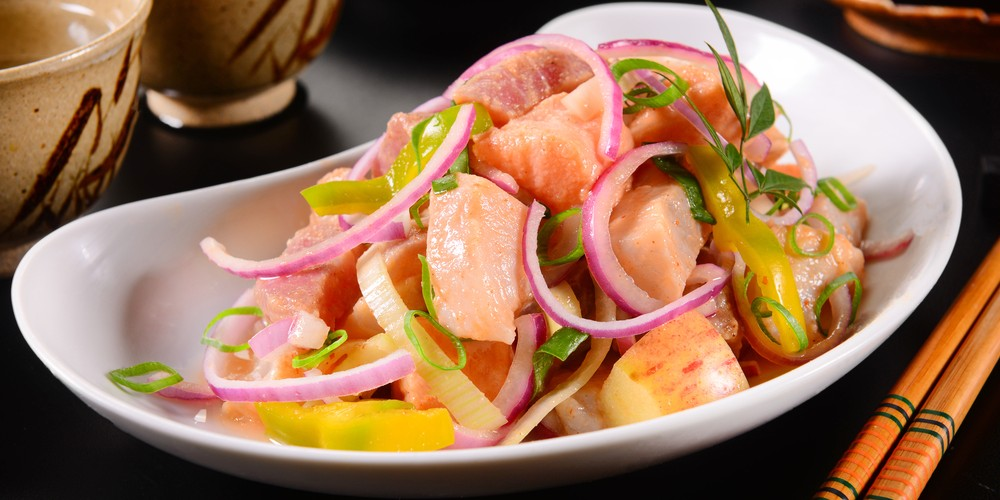
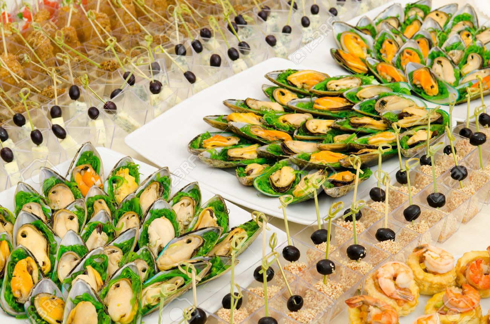
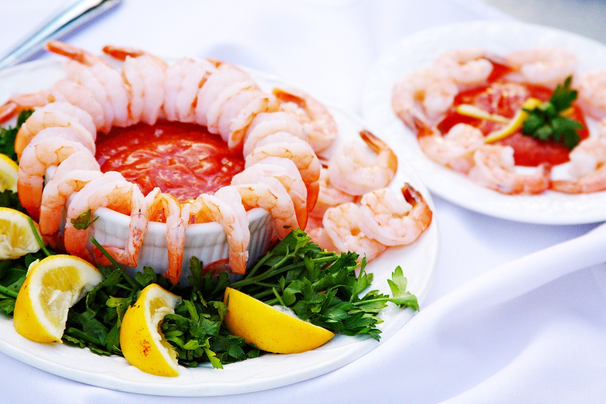
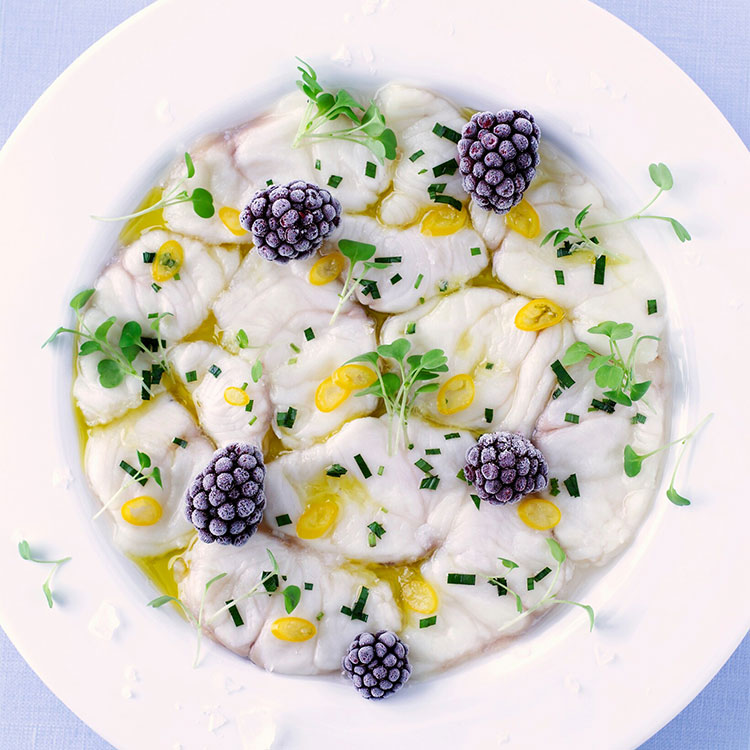
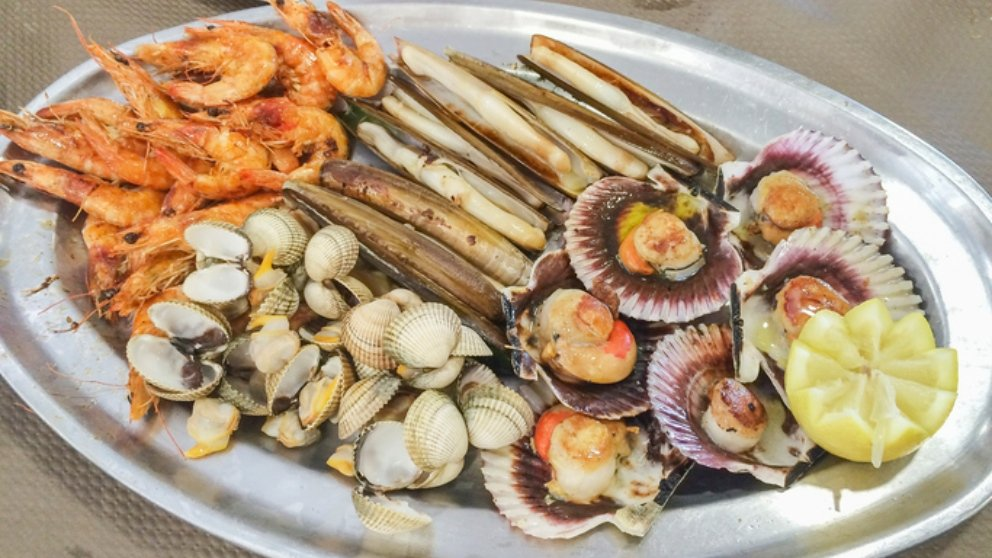
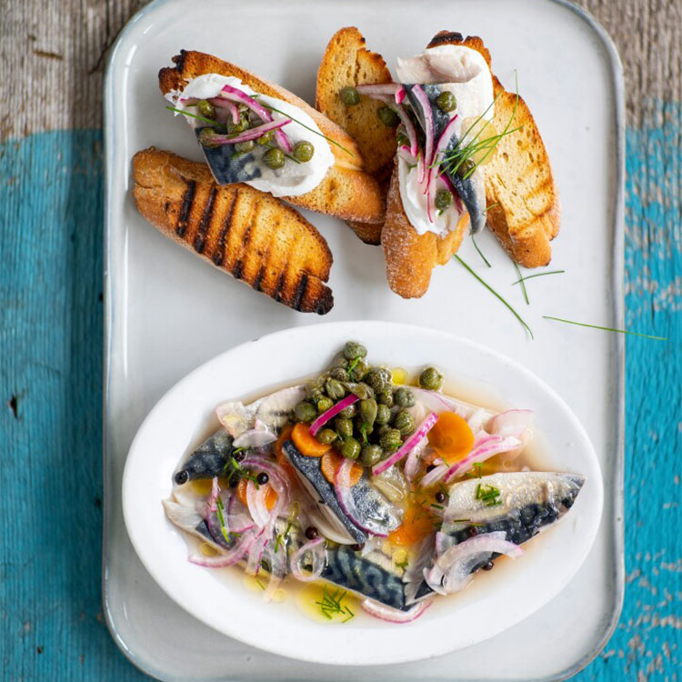
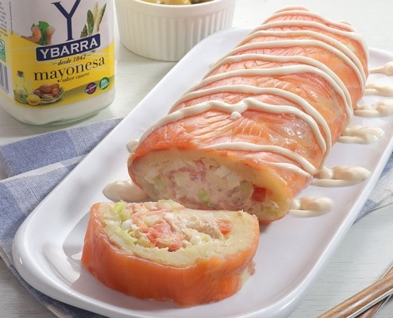
ᴛᴀʀᴛᴀʀ ᴅᴇ ꜱᴀʟᴍᴏɴ
𝑬𝒍 𝒕𝒂𝒓𝒕𝒂𝒓 𝒅𝒆 𝒔𝒂𝒍𝒎ó𝒏 𝒔𝒆 𝒑𝒓𝒆𝒑𝒂𝒓𝒂 𝒄𝒐𝒏 𝒔𝒂𝒍𝒎ó𝒏 𝒄𝒓𝒖𝒅𝒐 𝒇𝒓𝒆𝒔𝒄𝒐 𝒚 𝒄𝒐𝒏𝒅𝒊𝒎𝒆𝒏𝒕𝒐𝒔. 𝑺𝒆 𝒔𝒖𝒆𝒍𝒆 𝒖𝒏𝒕𝒂𝒓 𝒆𝒏 𝒖𝒏𝒂 𝒈𝒂𝒍𝒍𝒆𝒕𝒂 𝒐 𝒑𝒂𝒏. 𝑬𝒔𝒕𝒆 𝒑𝒍𝒂𝒕𝒐 𝒔𝒆 𝒑𝒖𝒆𝒅𝒆 𝒆𝒍𝒂𝒃𝒐𝒓𝒂𝒓 𝒄𝒐𝒏 𝒔𝒂𝒍𝒎ó𝒏 𝒂𝒉𝒖𝒎𝒂𝒅𝒐, 𝒔𝒊 𝒆𝒍 𝒑𝒆𝒔𝒄𝒂𝒅𝒐 𝒄𝒓𝒖𝒅𝒐 𝒏𝒐 𝒆𝒔 𝒏𝒖𝒆𝒔𝒕𝒓𝒂 𝒑𝒂𝒔𝒊ó𝒏, 𝒂𝒖𝒏𝒒𝒖𝒆 𝒏𝒐 𝒄𝒐𝒏𝒗𝒊𝒆𝒏𝒆 𝒂𝒃𝒖𝒔𝒂𝒓 𝒅𝒆 𝒍𝒐𝒔 𝒂𝒉𝒖𝒎𝒂𝒅𝒐𝒔 𝒑𝒐𝒓 𝒍𝒂 𝒄𝒂𝒏𝒕𝒊𝒅𝒂𝒅 𝒅𝒆 𝒔𝒐𝒅𝒊𝒐 𝒒𝒖𝒆 𝒑𝒖𝒆𝒅𝒆𝒏 𝒍𝒍𝒆𝒗𝒂𝒓. 𝑬𝒍 𝒔𝒂𝒍𝒎ó𝒏, 𝒆𝒔𝒐 𝒔í, 𝒉𝒂𝒚 𝒒𝒖𝒆 𝒄𝒐𝒏𝒈𝒆𝒍𝒂𝒓𝒍𝒐 𝒄𝒐𝒎𝒐 𝒎í𝒏𝒊𝒎𝒐 5 𝒅í𝒂𝒔 𝒆𝒏 𝒄𝒂𝒔𝒂 𝒔𝒊 𝒍𝒐 𝒄𝒐𝒎𝒑𝒓𝒂𝒎𝒐𝒔 𝒇𝒓𝒆𝒔𝒄𝒐 𝒑𝒂𝒓𝒂 𝒆𝒗𝒊𝒕𝒂𝒓 𝒓𝒊𝒆𝒔𝒈𝒐𝒔 𝒅𝒆 𝒂𝒏𝒊𝒔𝒂𝒌𝒊𝒔.
𝑺𝒆 𝒕𝒓𝒂𝒕𝒂 𝒅𝒆 𝒖𝒏𝒂 𝒆𝒍𝒂𝒃𝒐𝒓𝒂𝒄𝒊ó𝒏 𝒅𝒆 𝒍𝒐 𝒎á𝒔 𝒔𝒆𝒏𝒄𝒊𝒍𝒍𝒂 𝒒𝒖𝒆 𝒏𝒐 𝒓𝒆𝒒𝒖𝒊𝒆𝒓𝒆 𝒏𝒊𝒏𝒈ú𝒏 𝒄𝒐𝒄𝒊𝒏𝒂𝒅𝒐. 𝑺í 𝒆𝒔 𝒂𝒄𝒐𝒏𝒔𝒆𝒋𝒂𝒃𝒍𝒆 𝒖𝒏 𝒎𝒂𝒓𝒈𝒆𝒏 𝒅𝒆 𝒕𝒊𝒆𝒎𝒑𝒐 𝒅𝒆 𝒎𝒂𝒓𝒊𝒏𝒂𝒅𝒐 𝒑𝒂𝒓𝒂 𝒒𝒖𝒆 𝒆𝒍 𝒑𝒆𝒔𝒄𝒂𝒅𝒐 𝒄𝒐𝒋𝒂 𝒃𝒖𝒆𝒏 𝒔𝒂𝒃𝒐𝒓 𝒚 𝒎𝒆𝒋𝒐𝒓𝒆 𝒔𝒖 𝒕𝒆𝒙𝒕𝒖𝒓𝒂, 𝒂𝒔í 𝒕𝒂𝒎𝒃𝒊é𝒏 𝒔𝒆 𝒑𝒊𝒆𝒓𝒅𝒆 𝒆𝒍 𝒂𝒔𝒑𝒆𝒄𝒕𝒐 𝒅𝒆 𝒄𝒓𝒖𝒅𝒐, 𝒚𝒂 𝒒𝒖𝒆 𝒍𝒐𝒔 á𝒄𝒊𝒅𝒐𝒔 𝒅𝒆 𝒍𝒂 𝒔𝒂𝒍𝒔𝒂 𝒍𝒐 "𝒄𝒐𝒄𝒊𝒏𝒂𝒏", 𝒆𝒏 𝒄𝒊𝒆𝒓𝒕𝒂 𝒎𝒂𝒏𝒆𝒓𝒂.
ᴛᴀʀᴛᴀʀ ᴅᴇ ᴀᴛÚɴ ʀᴏᴊᴏ ʏ ᴀɢᴜᴀᴄᴀᴛᴇ
𝑬𝒔𝒕𝒆 𝒕𝒂𝒓𝒕𝒂𝒓 𝒅𝒆 𝒂𝒕ú𝒏 𝒓𝒐𝒋𝒐 𝒚 𝒂𝒈𝒖𝒂𝒄𝒂𝒕𝒆 𝒔𝒆 𝒆𝒍𝒂𝒃𝒐𝒓𝒂 𝒆𝒏 𝒂𝒑𝒆𝒏𝒂𝒔 𝒖𝒏𝒐𝒔 𝒎𝒊𝒏𝒖𝒕𝒐𝒔, 𝒑𝒆𝒓𝒐 𝒄𝒐𝒏𝒍𝒍𝒆𝒗𝒂 𝒖𝒏 𝒑𝒂𝒓 𝒅𝒆 𝒑𝒂𝒔𝒐𝒔 𝒒𝒖𝒆 «𝒂𝒍𝒂𝒓𝒈𝒂𝒏» 𝒖𝒏 𝒑𝒐𝒄𝒐 𝒍𝒂 𝒓𝒆𝒄𝒆𝒕𝒂. 𝑬𝒍 𝒂𝒕ú𝒏, 𝒂𝒖𝒏𝒒𝒖𝒆 𝒔𝒆𝒂 𝒇𝒓𝒆𝒔𝒄𝒐, 𝒄𝒐𝒏𝒗𝒊𝒆𝒏𝒆 𝒄𝒐𝒏𝒈𝒆𝒍𝒂𝒓𝒍𝒐 𝒆𝒏 𝒄𝒂𝒔𝒂 𝒆𝒏𝒕𝒓𝒆 24 𝒚 48 𝒉𝒐𝒓𝒂𝒔 𝒑𝒂𝒓𝒂 𝒆𝒗𝒊𝒕𝒂𝒓 𝒆𝒍 𝒇𝒂𝒎𝒐𝒔𝒐 𝒚 𝒕𝒆𝒎𝒊𝒅𝒐 𝒂𝒏𝒊𝒔𝒂𝒌𝒊𝒔. 𝒀 𝒑𝒐𝒓 𝒐𝒕𝒓𝒐 𝒍𝒂𝒅𝒐, 𝒂𝒖𝒏𝒒𝒖𝒆 𝒍𝒐 𝒑𝒖𝒆𝒅𝒆𝒔 𝒄𝒐𝒏𝒔𝒖𝒎𝒊𝒓 𝒏𝒂𝒅𝒂 𝒎á𝒔 𝒑𝒓𝒆𝒑𝒂𝒓𝒂𝒓𝒍𝒐, 𝒂𝒍 𝒅í𝒂 𝒔𝒊𝒈𝒖𝒊𝒆𝒏𝒕𝒆 𝒆𝒔𝒕á 𝒅𝒆 𝒂𝒖𝒕é𝒏𝒕𝒊𝒄𝒐… ¡𝒆𝒔𝒄á𝒏𝒅𝒂𝒍𝒐! 𝑻𝒆 𝒂𝒔𝒆𝒈𝒖𝒓𝒂𝒎𝒐𝒔 𝒒𝒖𝒆 𝒍𝒂 𝒆𝒔𝒑𝒆𝒓𝒂 𝒎𝒆𝒓𝒆𝒄𝒆 𝒍𝒂 𝒑𝒆𝒏𝒂 😉
ᴍᴇʀʟᴜᴢᴀ ᴄᴏɴ ꜱᴀʟꜱᴀ ᴅᴇ ɢᴀᴍʙᴀꜱ ʏ ᴄᴀᴠɪᴀʀ
𝑳𝒂 𝒎𝒆𝒋𝒐𝒓 𝒎𝒆𝒓𝒍𝒖𝒛𝒂 𝒇𝒓𝒆𝒔𝒄𝒂 , 𝒄𝒐𝒏 𝒖𝒏𝒐𝒔 𝒕𝒐𝒒𝒖𝒆𝒔 𝒅𝒆 𝒄𝒂𝒗𝒊𝒂𝒓 𝒅𝒆 𝒑𝒓𝒊𝒎𝒆𝒓𝒂 𝒄𝒂𝒍𝒊𝒅𝒂𝒅 𝒄𝒐𝒏 𝒖𝒏𝒂 𝒄𝒂𝒎𝒂 𝒅𝒆 𝒔𝒂𝒍𝒔𝒂 𝒅𝒆 𝒈𝒂𝒎𝒃𝒂𝒔 𝒓𝒆𝒑𝒐𝒔𝒂𝒅𝒐 𝒆𝒏 𝒖𝒏𝒂𝒔 𝒍𝒂𝒎𝒊𝒏𝒂𝒔𝒅𝒆 𝒑𝒊𝒎𝒊𝒆𝒏𝒕𝒐 𝒂𝒍 𝒉𝒐𝒓𝒏𝒐 𝒄𝒐𝒏 𝒂𝒄𝒆𝒊𝒕𝒆 𝒅𝒆 𝒐𝒓𝒊𝒈𝒆𝒏.𝑬𝒍 𝒍𝒐𝒎𝒐 𝒅𝒆 𝒍𝒂 𝒎𝒆𝒓𝒍𝒖𝒛𝒂 𝒄𝒐𝒏 𝒖𝒏𝒂 𝒓𝒂𝒎𝒂 𝒅𝒆 𝒉𝒊𝒆𝒓𝒃𝒂 𝒃𝒖𝒆𝒏𝒂 𝒑𝒂𝒓𝒂 𝒅𝒂𝒓𝒍𝒆 𝒇𝒓𝒆𝒔𝒄𝒐𝒓
ᴇɴꜱᴀʟᴀᴅᴀ ᴅᴇ ɢᴀᴍʙᴀ
𝑹𝒆𝒄𝒆𝒕𝒂 𝒅𝒆 𝒆𝒏𝒔𝒂𝒍𝒂𝒅𝒊𝒍𝒍𝒂 𝒕í𝒑𝒊𝒄𝒂 𝒅𝒆𝒍 𝒔𝒖𝒓 𝒅𝒆 𝑬𝒔𝒑𝒂ñ𝒂 𝒄𝒐𝒏 𝒈𝒂𝒎𝒃𝒂𝒔 𝒅𝒆 𝒔𝒊𝒏𝒈𝒖𝒍𝒂𝒓 𝒔𝒂𝒃𝒐𝒓 𝒚 𝒖𝒏𝒂 𝒄𝒖𝒊𝒅𝒂𝒅𝒂 𝒕𝒆𝒙𝒕𝒖𝒓𝒂 𝒒𝒖𝒆 𝒍𝒂 𝒅𝒊𝒔𝒕𝒊𝒏𝒈𝒖𝒆 𝒅𝒆 𝒍𝒂𝒔 𝒅𝒆𝒎á𝒔.𝑬𝒔𝒕𝒆 𝒆𝒔 𝒖𝒏 𝒑𝒍𝒂𝒕𝒐 𝒇𝒓𝒆𝒔𝒄𝒐 𝒚 𝒔𝒂𝒍𝒖𝒅𝒂𝒃𝒍𝒆. 𝑬𝒍 𝒗𝒆𝒓𝒂𝒏𝒐 𝒆𝒔 𝒍𝒂 é𝒑𝒐𝒄𝒂 𝒅𝒆 𝒍𝒂𝒔 𝒆𝒏𝒔𝒂𝒍𝒂𝒅𝒂𝒔, 𝒂𝒔í 𝒒𝒖𝒆 𝒂𝒃𝒓𝒊𝒎𝒐𝒔 𝒕𝒆𝒎𝒑𝒐𝒓𝒂𝒅𝒂 𝒄𝒐𝒏 𝒆𝒔𝒕𝒂 𝒆𝒏𝒔𝒂𝒍𝒂𝒅𝒂 𝒕𝒓𝒐𝒑𝒊𝒄𝒂𝒍. 𝑯𝒂 𝒔𝒊𝒅𝒐 𝒖𝒏 𝒂𝒄𝒊𝒆𝒓𝒕𝒐 𝒍𝒂 𝒄𝒐𝒎𝒃𝒊𝒏𝒂𝒄𝒊ó𝒏 𝒅𝒆 𝒂𝒈𝒖𝒂𝒄𝒂𝒕𝒆 𝒚 𝒎𝒂𝒏𝒈𝒐 𝒄𝒐𝒏 𝒆𝒍 𝒎𝒂𝒓𝒊𝒔𝒄𝒐.𝑺𝒆 𝒆𝒎𝒑𝒍𝒂𝒕𝒂 𝒄𝒐𝒏 𝒂𝒚𝒖𝒅𝒂 𝒅𝒆 𝒖𝒏 𝒂𝒓𝒐 𝒚 𝒔𝒆 𝒅𝒆𝒄𝒐𝒓𝒂 𝒄𝒐𝒏 𝒍𝒂𝒔 𝒈𝒂𝒎𝒃𝒂. 𝒚 𝒖𝒏𝒂𝒔 𝒉𝒐𝒋𝒂𝒔 𝒅𝒆 𝒄𝒂𝒏ò𝒏𝒊𝒈𝒐𝒔
ʟᴀɴɢᴏꜱᴛᴀ ᴄᴏɴ ꜰᴜᴇɴᴛᴇ ᴅᴇ ɢᴀᴍʙᴀꜱ ʀᴏᴊᴀꜱ
𝑳𝒂𝒔 𝒍𝒂𝒏𝒈𝒐𝒔𝒕𝒂𝒔, 𝒔𝒆𝒍𝒆𝒄𝒄𝒊𝒐𝒏𝒂𝒅𝒂𝒔 𝒎𝒊𝒏𝒖𝒕𝒐𝒔 𝒂𝒏𝒕𝒆𝒔 𝒅𝒆 𝒍𝒍𝒆𝒈𝒂𝒓 𝒂 𝒍𝒂 𝒄𝒐𝒄𝒊𝒏𝒂 𝒆𝒏 𝒍𝒐𝒔 𝒗𝒊𝒗𝒆𝒓𝒐𝒔 𝒄𝒐𝒏 𝒂𝒈𝒖𝒂 𝒅𝒆 𝒎𝒂𝒓 𝒅𝒆 𝑨𝒔𝒕𝒖𝒚, 𝒔𝒐𝒏 𝒍𝒂𝒔 𝒈𝒓𝒂𝒏𝒅𝒆𝒔 𝒑𝒓𝒐𝒕𝒂𝒈𝒐𝒏𝒊𝒔𝒕𝒂𝒔 𝒅𝒆 𝒍𝒂𝒔 𝒋𝒐𝒓𝒏𝒂𝒅𝒂𝒔, 𝒑𝒆𝒓𝒐, 𝒑𝒓𝒆𝒗𝒊𝒂𝒎𝒆𝒏𝒕𝒆, 𝒉𝒂𝒚 𝒐𝒕𝒓𝒐𝒔 𝒑𝒍𝒂𝒕𝒐𝒔 𝒒𝒖𝒆 𝒄𝒐𝒏𝒇𝒐𝒓𝒎𝒂𝒏 𝒖𝒏 𝒎𝒆𝒏ú 𝒅𝒆𝒈𝒖𝒔𝒕𝒂𝒄𝒊ó𝒏 𝒅𝒆 𝒄𝒂𝒕𝒆𝒈𝒐𝒓í𝒂.
ᴄᴀɴᴇʟᴏɴᴇꜱ ᴅᴇ ᴘᴇᴘɪɴᴏ ᴄᴏɴ ʙᴀꜱᴇ ᴅᴇ ᴛᴏᴍᴀᴛᴇ
𝑬𝒍 𝒑𝒆𝒑𝒊𝒏𝒐 𝒄𝒐𝒓𝒕𝒂𝒅𝒐 𝒆𝒏 𝒍á𝒎𝒊𝒏𝒂𝒔 𝒆𝒔 𝒊𝒅𝒆𝒂𝒍 𝒑𝒂𝒓𝒂 𝒓𝒆𝒍𝒍𝒆𝒏𝒂𝒓, 𝒆𝒏𝒓𝒐𝒍𝒍𝒂𝒓 𝒚 𝒉𝒂𝒄𝒆𝒓 '𝒇𝒂𝒍𝒔𝒐𝒔 𝒄𝒂𝒏𝒆𝒍𝒐𝒏𝒆𝒔'. 𝑨𝒚ú𝒅𝒂𝒕𝒆 𝒄𝒐𝒏 𝒖𝒏𝒂 𝒎𝒂𝒏𝒅𝒐𝒍𝒊𝒏𝒂 𝒑𝒂𝒓𝒂 𝒒𝒖𝒆 𝒕𝒆 𝒔𝒂𝒍𝒈𝒂𝒏 𝒎𝒖𝒚 𝒇𝒊𝒏𝒂𝒔. 𝑬𝒍 𝒓𝒆𝒍𝒍𝒆𝒏𝒐 𝒍𝒐 𝒉𝒂𝒓𝒆𝒎𝒐𝒔 𝒂 𝒃𝒂𝒔𝒆 𝒅𝒆 𝒖𝒏𝒂 𝒄𝒓𝒆𝒎𝒂 𝒅𝒆 𝒒𝒖𝒆𝒔𝒐 𝒔𝒂𝒍𝒑𝒊𝒎𝒆𝒏𝒕𝒂𝒅𝒂 𝒚 𝒔𝒆𝒓𝒗𝒊𝒓𝒆𝒎𝒐𝒔 𝒆𝒍 𝒓𝒆𝒔𝒖𝒍𝒕𝒂𝒅𝒐 𝒔𝒐𝒃𝒓𝒆 𝒗𝒆𝒓𝒅𝒖𝒓𝒊𝒕𝒂𝒔 𝒑𝒊𝒄𝒂𝒅𝒂𝒔 𝒚 𝒂𝒍𝒊ñ𝒂𝒅𝒂𝒔 𝒄𝒐𝒏 𝒖𝒏𝒂 𝒗𝒊𝒏𝒂𝒈𝒓𝒆𝒕𝒂 𝒚 𝒉𝒊𝒆𝒓𝒃𝒂𝒔 𝒂𝒓𝒐𝒎á𝒕𝒊𝒄𝒂𝒔. ¡𝑼𝒏 𝒑𝒍𝒂𝒕𝒐 𝒇𝒓í𝒐, 𝒏𝒐 𝒔𝒐𝒍𝒐 𝒅𝒆𝒍𝒊𝒄𝒊𝒐𝒔𝒐, 𝒔𝒊𝒏𝒐 𝒓á𝒑𝒊𝒅𝒐 𝒚 𝒎𝒖𝒚 𝒇á𝒄𝒊𝒍 𝒅𝒆 𝒉𝒂𝒄𝒆𝒓!
ʙᴀꜱᴇ ᴅᴇ ɴᴀʀᴀɴᴊᴀ ᴄᴏɴ ꜱᴇᴍɪʟʟᴀꜱ ʏ ꜱᴀʟꜱᴀ ᴅᴇ ᴄᴀʟᴀʙᴀᴢᴀ
𝑬𝒔𝒕𝒆 𝒑𝒍𝒂𝒕𝒐, 𝒆𝒔𝒕á 𝒄𝒐𝒄𝒊𝒏𝒂𝒅𝒐 𝒄𝒐𝒏 𝒖𝒏𝒂 𝒃𝒂𝒔𝒆 𝒅𝒆 𝑵𝒂𝒓𝒂𝒏𝒋𝒂 𝒚 𝒄𝒂𝒛𝒂 𝒚 𝒑𝒆𝒓𝒕𝒆𝒏𝒆𝒄𝒆 𝒂 𝒍𝒐𝒔 𝒑𝒍𝒂𝒕𝒐𝒔 𝒅𝒆 𝒍𝒂 𝒄𝒐𝒄𝒊𝒏𝒂 𝑻𝒓𝒂𝒅𝒊𝒄𝒊𝒐𝒏𝒂𝒍. 𝑷𝒐𝒓 𝒓𝒆𝒈𝒍𝒂 𝒈𝒆𝒏𝒆𝒓𝒂𝒍 𝒔𝒆 𝒄𝒐𝒏𝒔𝒖𝒎𝒆, 𝒑𝒓𝒊𝒏𝒄𝒊𝒑𝒂𝒍𝒎𝒆𝒏𝒕𝒆, 𝒅𝒖𝒓𝒂𝒏𝒕𝒆 𝑶𝒕𝒐ñ𝒐 / 𝑰𝒏𝒗𝒊𝒆𝒓𝒏𝒐.𝑳𝒂 𝒄𝒂𝒍𝒂𝒃𝒂𝒛𝒂, 𝒑𝒐𝒓 𝒔𝒖 𝒄𝒓𝒆𝒎𝒐𝒔𝒂 𝒕𝒆𝒙𝒕𝒖𝒓𝒂 𝒚 𝒄𝒐𝒍𝒐𝒓, 𝒔𝒆 𝒄𝒐𝒏𝒗𝒊𝒆𝒓𝒕𝒆 𝒆𝒏 𝒖𝒏𝒂 𝒅𝒆 𝒍𝒂𝒔 𝒗𝒆𝒓𝒅𝒖𝒓𝒂𝒔 𝒎á𝒔 𝒊𝒅ó𝒏𝒆𝒂𝒔 𝒑𝒂𝒓𝒂 𝒍𝒂 𝒑𝒓𝒆𝒑𝒂𝒓𝒂𝒄𝒊ó𝒏 𝒅𝒆 𝒄𝒓𝒆𝒎𝒂𝒔 𝒚 𝒑𝒖𝒓é𝒔. 𝑬𝒏 𝒆𝒔𝒕𝒂 𝒓𝒆𝒄𝒆𝒕𝒂 𝒍𝒂 𝒂𝒓𝒐𝒎𝒂𝒕𝒊𝒛𝒂𝒎𝒐𝒔 𝒄𝒐𝒏 𝒏𝒂𝒓𝒂𝒏𝒋𝒂 𝒚 𝒍𝒂 𝒖𝒔𝒂𝒎𝒐𝒔 𝒄𝒐𝒎𝒐 𝒂𝒄𝒐𝒎𝒑𝒂ñ𝒂𝒎𝒊𝒆𝒏𝒕𝒐 𝒅𝒆 𝒖𝒏 𝒋𝒖𝒈𝒐𝒔𝒐 𝒚 𝒔𝒂𝒃𝒓𝒐𝒔𝒐 𝒎𝒂𝒈𝒓𝒆𝒕 𝒅𝒆 𝒑𝒂𝒕𝒐, 𝒒𝒖𝒆 𝒏𝒐𝒔 𝒗𝒂 𝒂 𝒅𝒂𝒓 𝒄𝒐𝒎𝒐 𝒓𝒆𝒔𝒖𝒍𝒕𝒂𝒅𝒐 𝒖𝒏 𝒑𝒍𝒂𝒕𝒐 𝒎𝒖𝒚 𝒗𝒊𝒔𝒕𝒐𝒔𝒐 𝒚 𝒄𝒐𝒏 𝒖𝒏𝒂 𝒄𝒐𝒎𝒃𝒊𝒏𝒂𝒄𝒊ó𝒏 𝒅𝒆 𝒔𝒂𝒃𝒐𝒓𝒆𝒔 𝒒𝒖𝒆 𝒔𝒐𝒓𝒑𝒓𝒆𝒏𝒅𝒆𝒓á𝒏 𝒈𝒓𝒂𝒕𝒂𝒎𝒆𝒏𝒕𝒆 𝒂 𝒕𝒖 𝒑𝒂𝒍𝒂𝒅𝒂𝒓.
Ensalada De Gamba Y Aguacate
El aguacate y las gambas forman una pareja perfecta, son dos texturas y dos sabores que parecen hechos el uno para el otro, si además se aderezan con una buena vinagreta, el éxito de esta ensalada marinera está asegurado.
Caviche De Salmon
El ceviche es uno de los platos mas representativos de la maravillosa comida peruana y de la costa pacífica suramericana, consistente en marinar en aliños cítricos (lima, limón, naranja) pescados y/o mariscos junto con cebollas, pimientos y cilantro.
Lo he preparado de varias maneras, pero nunca lo había antes con salmón, pero ha quedado estupendo!!
Bocaditos De Mejillon con olivas negras
En la base, use brotes de ensalada, pero pienso que unos ajos tiernos cortados en juliana y después salteados, irían estupendamente como base de este pincho. De todas las maneras, la idea es no usar el fuego para que no sea mas fácil.
Pues muy sencillo, la única preparación previa que tiene el pincho, es pelar el tomate y cortarlo en rodajas.
Entonces, en la base del pan ponemos unas hojas de brotes, que salamos con unas escamas de sal (podemos darle un ligero toque con el aceite de la lata), por encima va la rodaja de tomate, que también salaremos, ponemos el mejillón y cubrimos ligeramente con un poco de mahonesa.
Gambones Con Salsa Roja
Los gambones a la naranja los puede hacer cualquier persona que no tenga ninguna experiencia en la cocina y es un buen entrante para una comida de celebraciones, incluyendo navidad o la cena de fin de año.Es un plato que puedes marinar con una copa de vino blanco bien frío y acompañar con pan para disfrutar mejor de los jugos que hay en la bandeja.
Lenguado Con Huevos Rotos Y Moras
El lenguado es un pescado blanco con forma plana. Cuando fui por primera vez de excursión al acuario de Barcelona con mis alumnos, me enteré de una curiosidad de este pez que me sorprendió mucho. Y es que nacen con un ojo a cada lado de la cabeza (como los peces normales), pero al llegar a la edad adulta uno de los ojos se muda para que los dos estén en el mismo lado. Así se pueden camuflar cubriendose de arena o lodo dejando al descubierto los dos ojos con los que observan a sus presas.
Mezcla de Navajas Ostras Langostinos Y Chirlas
Es uno de los platos más lujosos que pueda existir. En una sola receta hay los mejores ingredientes del mar. Un bocado que reservamos para ocasiones especiales y se convierte en un instante de celebración. Tener una buena materia prima es una de las claves principales para el éxito de este plato, en una mariscada de las que hacen historia, no pueden faltar los mejores mariscos, desde mejillones hasta langostinos y gambas, todo es poco para disfrutar de un plato de impresión. Toma nota de los consejos y los ingredientes que harán de una comida o cena convencional algo extraordinario
Caballa Marinada Con Hierbas Silvestres
Para hacer una caballa marinada córtala en tiras y déjala macerar unas horas con zumo y ralladura de limón, aceite y sal. Se pican las verduritas (pimientos, tomate, cebolla) aliñadas y se sirve todo en un montadito de pan.Los mejores meses para consumir caballa son los de primavera, porque su carne es más grasa y jugosa, aunque puedes encontrarla en el mercado durante más meses, sin problema. Aprovecha su excelente sabor y su precio ajustado (suele rondar los tres euros el kilo) para innovar en tus recetas con este pescado rico en omega 3 y versátil como pocos.
Pastel De Salmon Tradicional
Este plato, en realidad no puede ser más sencillo. Se trata de preparar una especie de tarta salada donde las capas de relleno se intercalan con pan, en este caso de molde y se presenta forrado con láminas de salmón ahumado que le da un aspecto brillante y colorido. Os animo a que os pongáis manos a la obra esta Navidad y lo preparéis en casa este rico pastel de salmón, os prometo éxito seguro.
Pasta Italiana Con Tomate Natural Y Olivas
Hay días en los que no nos apetece complicarnos nada en la cocina, necesitamos un plato sencillo y con pocos ingredientes pero además muy rico, y en muchas de esas ocasiones la pasta es la solución. Simplemente cocida y con un poco de aceite, queso y pimienta ya está buenísima, pero si además te animas a elaborar una salsa casera el resultado va a ser de 10.

PRECIOS
|
LUNES |
MARTES |
MIERCOLES |
JUEVES |
VIERNES |
SABADO |
DOMINGO |
| 12:00 |
X |
X |
X |
O |
X |
O |
X |
| 13:00 |
O |
O |
O |
O |
O |
O |
X |
| 14:00 |
O |
O |
O |
O |
O |
O |
X |
| 15:00 |
O |
O |
O |
O |
O |
O |
X |
| 16:00 |
O |
O |
O |
O |
O |
O |
X |